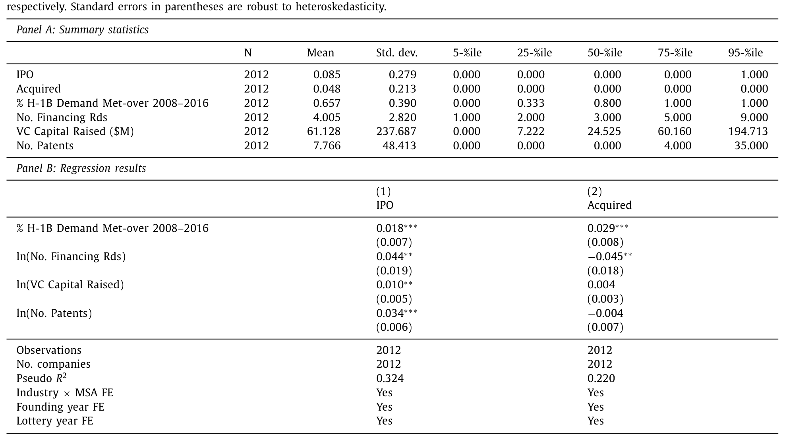
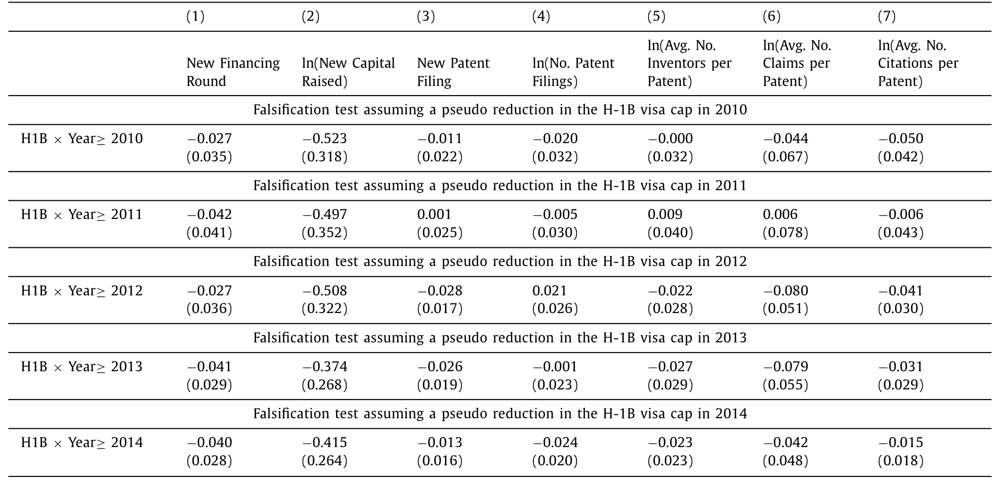
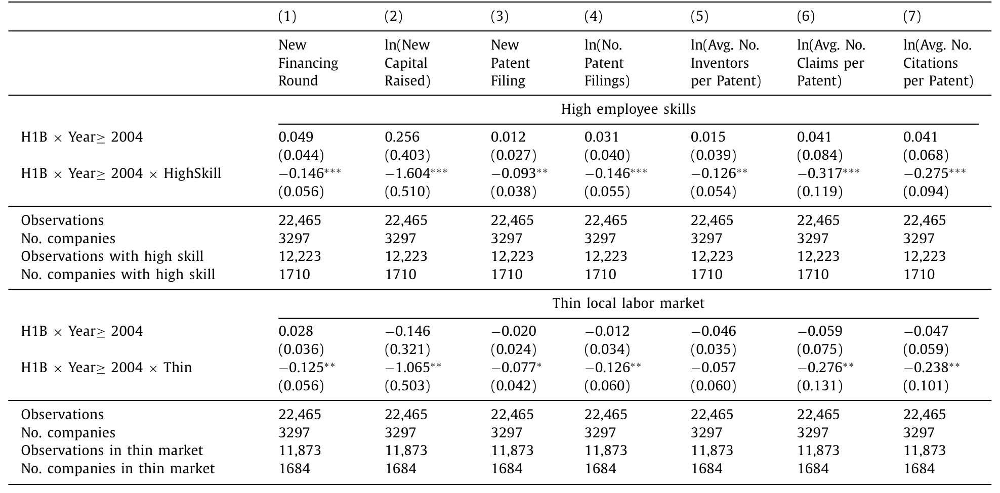
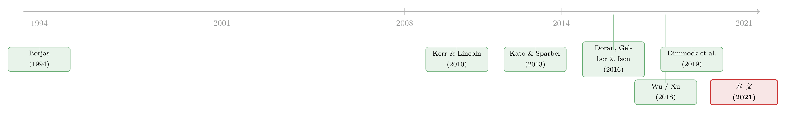

抽签抽出来的创新力：H-1B 签证如何决定一家创业公司的生死
本文读的是 Chen, Hshieh & Zhang (2021, Journal of Financial Economics)：作者借助两个自然实验——H-1B 签证抽签的随机中签，以及 2004 年签证配额被砍三分之二——证明高技能外籍劳动力对 VC 支持的创业公司有【因果性】的、长期的、难以替代的价值。一家创业公司多中一个签证，融资更多、专利更多更好、上市概率更高；而当政策把这扇门关上，那些原本依赖外籍工人的创业公司受到的是【永久性】且【随时间放大】的损伤。
1 一个被反复争论、却始终没被「干净」回答的问题
先讲一个几乎人人都知道、却很少有人能说清的事实。
移民只占美国人口不到 14%，却创办了将近四分之一的新企业、半数的硅谷高科技创业公司、以及近三分之一的 VC 支持公司（Hathaway, 2017）。在 2011 年最顶尖的 50 家 VC 支持创业公司里，差不多一半至少有一位移民创始人，超过四分之三在关键领导岗位上有移民身影（Anderson, 2011）。换句话说，那些被认为「最成功、最具创新力」的私营公司——它们仅占全部私营公司不到 1%，却贡献了 1980–2016 年间高科技 IPO 的 58%——很大程度上是移民撑起来的。
可问题恰恰在这里。一个看似铁板钉钉的相关关系，背后藏着一个学界吵了几十年都没吵明白的因果问题：这些高技能外籍工人，究竟是真的拥有本地人替代不了的独特技能，还是仅仅因为他们更便宜？（Borjas, 1994; Kerr, 2013）
这个区分一点也不学究。如果答案是前者，那么收紧 H-1B 签证 (H-1B visa) 就是在直接掐断美国创新的命脉；如果是后者，签证收紧不过是逼企业去雇本地人，无伤大雅，甚至还保护了本土就业。行业调查给出的答案当然是前者——2013 年全美创业投资协会 (NVCA) 的调查里，大多数 VC 支持的创业公司抱怨「项目因为缺 H-1B 签证而被拖延」，四分之三的人认为缺少外籍技术劳动力损害了美国经济。可这只是「问卷里的答案」，不是证据。
调查会撒谎，至少会带着立场。真正棘手的是【内生性】：申请 H-1B 的公司和不申请的公司本就不同，雇到外籍工人的公司和雇不到的公司也本就不同。你观察到「用了外籍工人的公司更成功」，完全可能只是因为「本来就更成功的公司更舍得、也更有能力去抢外籍工人」。相关，不等于因果。
于是真正的难题浮出水面：怎样找到一个外生的、与公司质量无关的冲击，让一些创业公司「随机地」多拿到外籍工人、另一些随机地拿不到？
这篇论文的全部精彩，就在于它找到了——而且找到了两个。
2 第一个自然实验：把签证当彩票抽
要理解作者的第一招，得先弄清 H-1B 这套制度本身的一个「意外礼物」。
美国雇主要雇一个外籍高技能工人，得走一整套流程：先向劳工部递交劳工条件申请 (Labor Condition Application, LCA)，证明雇外籍人不会挤掉本地人；劳工部批了之后，再为每一个外籍雇员单独向移民局 (USCIS) 递交一份 I-129 申请。签证有年度上限。1990 年《移民法》设的额度是 6.5 万，2001 年一度被抬到 19.5 万——在那之前，配额从来没用完过，申请的人想要就有。
但 2004 年，配额被一刀砍回 65,000。从此需求年年超过供给。怎么分？移民局用电脑随机抽签。
这就是关键。当一家创业公司为它需要的外籍工人递交了 I-129，它能不能拿到签证，不取决于它的质量、前景、行业，而取决于抽签的运气。作者举了个干净的例子：两家创业公司都申请 5 个 H-1B 名额，幸运的那家抽中 4 个，倒霉的那家只抽中 1 个——它们的「需求满足率」分别是 4/5 和 1/5，这个差异纯粹是运气，是一次对劳动力的外生冲击。倒霉的那家可能因为缺人而不得不搁置某个产品、某项专利；幸运的那家则多了三个高技能工人。
于是作者构造了核心解释变量 %H1BDemandMet——一家公司在某年「被抽签满足的签证需求比例」。识别策略可以写成下面这个回归：
$$ y_{i,[t,t+2]} = \beta \times \%H1BDemandMet_{it} + \gamma X_{i,t-1} + Industry_j \times \tau_t \times MSA_k + \varepsilon_{it} $$
这里值得把每一块拆开看清楚，因为它正是这篇论文识别力的全部来源：
被解释变量 y 用的是 t 到 t+2 的三年累计表现——给高技能劳动力的作用留出传导时间。为什么要放「行业 × 年 × 都市区」(MSA) 这样一个三重交互的固定效应？因为这等于是把同一年、同一行业、同一个都市区里的公司放在一起两两相比——它们面对的本地劳动力市场、本地工资、本地行情都一样，唯一的差别就是抽签运气。这样一来，β 捕捉的就几乎只剩下那点纯随机的签证冲击了。
作者并没有把「随机」当成口号。他们在 Table 2 里专门验证：把抽签满足率回归到一堆可观测的公司特征上，所有系数全都不显著——也就是说中签与否不偏向任何特定类型的公司。这一步与 Doran et al. (2016)、Wu (2018) 的发现一致，是整个识别策略的地基。
那么结果呢？一个标准差的中签概率上升，会让公司在抽签后三年里：VC 融资轮数增加 7.1%，专利申请数增加 6.2%，每项专利的权利要求数（一个常用的专利质量代理）增加 9.7%，上市概率提高 8.8%。这些不是「显著但微弱」的数字，而是经济意义上相当可观的量级。

Table 4
接着，一个自然的问题是：这些效应会不会只是昙花一现？运气好的公司短期冲一下，长期就被均值回归抹平了？这正是作者要用第二个实验回答的。
3 第二个自然实验：当门「砰」地一声关上
抽签实验告诉我们「多一个外籍工人有多好」，但它有个天然的局限——它衡量的是边际上多一点的效应。要看清楚「外籍劳动力被系统性切断」的后果，得有一次更剧烈的、整体性的冲击。
2004 年那次配额从 19.5 万腰斩到 6.5 万，正是这样一次冲击。它不针对任何一家公司，是国会和政府的一纸政令——对企业而言，彻头彻尾的外生。
于是作者上了第二招：双重差分 (difference-in-differences, DiD)。处理组是「H-1B 创业公司」——在 2004 年之前拿到过任何 H-1B 签证的公司；对照组是「非 H-1B 创业公司」——其余只用本地工人的公司。逻辑很直白：如果外籍工人真的不可替代，那么 2004 年这次配额收紧，应该更严重地伤害那些原本就依赖外籍工人的公司，而对只用本地工人的公司影响甚微。两组在 2004 前后的表现差异之差，就是这次冲击的因果效应。
结果与第一个实验严丝合缝：2004 年的配额削减，显著削弱了处理组创业公司融资、创新、上市或被并购的能力。而且——这是全文最有分量的一句话——这种损伤是永久性的，并且随时间放大 (amplifies in the long run)。
这就回答了上一节的疑问。如果只是「招人、再培训」的短期成本，那么伤害应该随时间衰减、最终消失。可它非但没消失，反而越来越深。短期成本论，被数据直接否决了。

Table 6
别忘了还有一道「证伪」的安全阀。作者一共做了五个证伪检验 (falsification tests)，在这些本不该出现 H-1B 工人效应的设定里，他们没有观察到任何一个假阳性。一个发现能在两个独立实验中相互印证、又在五个证伪检验中全部「沉默」，它的可信度就远高于单一回归里的一个星号。
4 机制：到底是「换不了」，还是「换得起但麻烦」？
到这里，因果已经立住了：高技能外籍工人确实对创业公司有实打实、长期的价值。但石破天惊的发现往往伴随一个更深的追问——为什么？ 究竟是什么机制，让一纸签证的得失能撬动一家公司的生死？
作者把候选答案收敛到两个：
其一，不完全替代 (imperfect labor substitution)。 本地工人和外籍高技能工人不是一回事，本地人未必具备同样的技能组合。外籍工人走了，那个位子真的没人能顶。
其二，招聘与再培训成本 (recruiting and retraining costs)。 哪怕本地人最终能顶上，重新招人、重新培训也要花钱花时间，短期内拖累表现。
怎么区分这两者？这恰恰是前面那个「损伤永久且放大」的发现派上用场的地方——如果只是招聘培训成本，伤害理应是短期的、会愈合的。可它是永久的。所以第二种机制几乎可以排除。
但真正关键的一步在于，作者没有止步于「排除法」，而是去找支持第一种机制的正面证据。如果是「替代不了」，那么效应应该在两类公司里更强：一是需要更多高技能工人的公司（这些工人最难用本地人替换），二是位于本地技术劳动力市场更稀薄地区的公司（本地根本招不到替代者）。数据正是如此——这两类公司里的 H-1B 工人效应都明显更强。
于是反转出现：长期以来「外籍工人只是廉价替代品」的论调，在这套层层递进的证据面前站不住脚了。外籍高技能工人是本地工人的【互补】，而非【替代】——这一点直接回应了移民经济学里那场关于「替代还是互补」的核心争论。

Table 8
5 它和「邻居们」的不同：研究的边界感
一篇好的实证论文，难得的不是把结论喊得多响，而是对自己结论的【适用范围】有多清醒。这篇论文在这一点上格外诚实。
自然实验向来以内部有效性 (internal validity) 见长、外部有效性 (external validity) 存疑（Cook, 2000; Shadish et al., 2002; Kahn and Whited, 2018）。作者把丑话说在前面，给出了三条边界：
- 第一，因为公司是【自选择】地去申请 H-1B 的，论文估出的经济量级，会大于一家「根本不申请签证」的 VC 公司所能得到的效应——别拿这个数字去外推到所有公司。
- 第二，这些估计严格说只对「申请了 H-1B 但抽签落选」的 VC 公司成立。
- 第三，因果效应本身（而非它的具体量级）似乎可以推广到上市公司和整个 VC 支持公司群体。
这种「把结论钉死在它该待的地方」的克制，本身就是论文质量的一部分。
6 文献脉络
把这篇论文放回它生长的那条线里，故事会更清楚。
最早，这是一场移民经济学里的争论。Borjas (1994) 代表的传统问题是：外籍工人到底是给本地劳动力市场增了值，还是只是压低工资的廉价替代？这个「替代还是互补」的二分，是后续一切研究的母题。
接着，研究者开始把目光投向 H-1B 这个具体制度。Kerr and Lincoln (2010) 用 H-1B 配额变动研究它对城市层面专利产出的影响，开了用签证政策做准实验的先河；Kato and Sparber (2013)、Peri, Shih and Sparber (2015) 等沿着配额与城市生产率这条路继续走。

然后，「抽签随机性」这个识别利器被发现了。Doran, Gelber and Isen (2016) 与 Wu (2018) 第一次用 H-1B 抽签来识别因果——但他们用的是 2006–2007 年的抽签，那两年要么中签率低到 3.8%、要么高到 98%，公司间几乎没有变异；而且样本是全美所有企业，异质性太大，结果偏弱甚至混杂。Xu (2018) 则转向配额冲击对上市公司的影响。
但真正关键的一步在于，这篇论文同时做对了三件前人没能同时做对的事：（1）用了五个所有签证都靠抽签分配、因而公司间中签率差异巨大的年份，识别力更强；（2）聚焦 VC 支持的创业公司这一同质且重要的群体；（3）把抽签实验和配额冲击两个实验【叠在一起】互相印证，还首次刻画了长期效应、并打开了「不完全替代」这个机制黑箱。 与它几乎同时的 Dimmock et al. (2019) 在另一套创业公司样本里得到了一致的结论——两篇论文互为佐证，反而增强了彼此的可信度。
这，就是本文在这条脉络里的位置。
这条「用政策与制度变动当外生冲击、识别要素投入对创新与企业表现之因果效应」的路子，和资本市场研究里的不少工作血脉相通。譬如把一部税法当作外生冲击、看风险资本如何流向大学城的研究（参见《资本会自己长出来吗？——一部法律如何把风险资本「吸」向大学城》），以及把创新当成可在地理空间里溢出的「天线效应」（参见《天线效应：硅谷为什么离不开波士顿？》）。
7 评论与延伸（Q&A + 研究方向）
(a) 几个可能的疑问
Q：抽签真的随机吗？会不会是「更会填表」的公司更容易中？
作者对此做了正面检验：把抽签满足率回归到一系列可观测公司特征上，系数全不显著，说明中签不偏向任何类型的公司。而且他们特意避开了 2006–2007 那种中签率极端（
3.8%或98%）、公司间几乎没有变异的年份，只用五个「全部靠抽签分配」、公司间中签率差异巨大的年份，这恰恰是它比 Doran et al. (2016) 和 Wu (2018) 更可信的地方。
Q：两个实验得到的「量级」为什么不能直接外推？
因为存在自选择。只有那些本就打算雇外籍工人、并真的去申请签证的公司才进入样本，它们对外籍劳动力的依赖天然更高。所以论文估出的效应量级，是「申请者群体」的效应，会系统性地大于一家从不申请签证的公司所能得到的效应。作者自己把这条边界讲得很清楚——可外推的是因果的【存在性】，不是它的【大小】。
Q：怎么知道伤害不是「招人、再培训」这类短期摩擦造成的？
靠「永久且放大」这个时间形态。招聘与再培训成本本质是一次性的、会随时间愈合；可第二个实验显示 2004 年配额冲击对处理组的损伤不但没愈合，反而越拖越深。短期成本论解释不了一条向下发散的曲线，于是被排除。
Q：「不完全替代」这个机制，证据够硬吗？
它不是靠排除法硬推出来的，而是有正面证据：效应在「需要更多高技能工人」和「本地技术劳动力市场更稀薄」的公司里显著更强——这正是「本地人替代不了外籍工人」最该发威的两种情形。两个维度的异质性指向同一个机制，比单一检验更有说服力。
Q：这和 Dimmock et al. (2019) 是不是重复劳动？
不是，是互补。两篇论文用的是不同的创业公司样本（对方样本只覆盖四年、每年平均
643家公司，约为本文样本年均公司数的10%，且数据来自覆盖偏薄的 Crunchbase），却得到一致结论——这种「不同样本、同一结论」的相互印证，反而强化了双方的有效性。而本文独有的贡献是长期效应和机制分析，这是对方做不了的。
Q：这对当下的移民政策意味着什么？
论文给的政策含义很直接：既然抽签落选都会实打实地削弱 VC 创业公司的创新与融资，那么提高 H-1B 年度配额，等于是在为美国经济的创新引擎松绑。这把「要不要给高技能移民开门」从一个意识形态争论，拉回到了一个有因果证据支撑的成本收益问题上。
(b) 几个可能的研究问题与提案
1. 外籍劳动力冲击会不会传导到公司债与信用风险？
【经济故事】既然 H-1B 配额削减「永久且放大」地损害了企业表现，那它理应抬高这些企业的违约概率与借贷成本——尤其对那些刚迈过 IPO 门槛、开始发债的科技公司。失业率能预言公司债违约（参见《当招人变得太容易：失业率为什么预言了公司债的违约》），那「招不到关键的人」是否也能？ 【可行性】中。需要把本文的 H-1B 处理组/对照组映射到有债券或银行贷款的公司（TRACE、DealScan），用同样的 2004 DiD 框架看信用利差。难点在于样本里发债的创业公司偏少，可能要扩到稍成熟的私营或新上市公司。
2. 当外籍工人被切断，资本会不会替代劳动？
【经济故事】一扇门关上，企业未必坐以待毙——它可能用自动化、用资本去顶替那个招不到的高技能岗位。这正好和「机器换人」的资产定价文献对话（参见《机器换人，为什么「被换的人」手里的股票反而更贵？》）。 【可行性】中。可在 2004 DiD 框架上，把被解释变量换成资本支出、设备投资或专利里的「自动化」技术类别。识别已经现成，主要工作量在于构造可信的「劳动可替代性」与自动化暴露度量。
3. 外资持有人会不会因为「移民政策风险」而重定价？
【经济故事】如果高技能移民是创新引擎的关键投入，那么移民政策的不确定性本身就是一类系统性风险。持有大量科技股的外资机构，会不会在签证收紧的年份系统性地调整对美国科技资产的暴露？这把「外资持有人」与「劳动力供给冲击」两条线接了起来。 【可行性】低到中。需要 13F 层面的机构持仓、按 H-1B 暴露度给公司打分，再看政策冲击窗口内的持仓变动。难点是移民政策冲击往往与其他宏观冲击同时发生，识别要格外小心。
4. 落选公司里的创始人会去哪？——人才的「外溢」
【经济故事】一家公司抽签落选、被迫放弃某个项目，那些本地骨干和未能入职的外籍人才并不会凭空消失，他们可能流向别处、甚至自己创业。这与「创业会在同事间传染」的发现相通（参见《创业会「传染」吗？——但它只在同类人之间传染》）。 【可行性】中。需要 LinkedIn 或报税记录级别的个人就业轨迹数据，把抽签落选作为对个人的外生冲击，追踪其后续去向。数据可得性是主要瓶颈。
(c) 我的判断
这是一篇方法上极其稳健的论文，它的力量不在某一个聪明的设计，而在两个独立实验 + 五个证伪检验之间彼此咬合的冗余度——任何单一识别的质疑，都被另一条证据线挡掉了。它把一个争论了几十年、却长期被内生性困住的问题，给出了一个干净的因果答案；更难得的是，它没有停在「有效应」，而是一路追到「为什么」，把「不完全替代」这个机制用正面证据钉死。
要说对识别的担忧，有两点。其一是自选择带来的外部有效性边界——作者自己已经坦白，但读者很容易在引用时忘掉这条边界，把「申请者群体」的量级误当成普适效应。其二，处理组/对照组的划分（2004 前是否拿过 H-1B）虽然外生于 2004 冲击，但「2004 前就用外籍工人」本身可能与某种未观测的公司类型（更国际化、更技术密集）相关，平行趋势在多大程度上成立，值得看更细的事前动态图。
后续我最想看到的，是把这条劳动力冲击的链条接到信用市场与外资定价上去：当一家公司的「人」被政策切断，它的债主、它的外资股东，是不是比它的产品和专利更早地察觉到了危险？那将是把「高技能移民」从一个劳动经济学议题，真正变成一个资产定价议题的关键一跳。
参考文献
- Anderson, S. (2011, 2013). Immigrant Founders and Key Personnel of America's 50 Top Venture-Funded Companies / NVCA survey reports. National Foundation for American Policy.
- Borjas, G. J. (1994). The economics of immigration. Journal of Economic Literature 32(4), 1667–1717.
- Dimmock, S. G., Huang, J., & Weisbenner, S. J. (2019). Give me your tired, your poor, your high-skilled labor: H-1B lottery outcomes and entrepreneurial success. Working paper.
- Doran, K., Gelber, A., & Isen, A. (2016). The effects of high-skilled immigration policy on firms: Evidence from H-1B visa lotteries. Working paper.
- Hathaway, I. (2017). Immigrant Founders of the 2017 Fortune 500. Center for American Entrepreneurship, unpublished working paper.
- Kahn, R., & Whited, T. M. (2018). Identification is not causality, and vice versa. Review of Corporate Finance Studies 7(1), 1–21.
- Kato, T., & Sparber, C. (2013). Quotas and quality: The effect of H-1B visa restrictions on the pool of prospective undergraduate students from abroad. Review of Economics and Statistics 95(1), 109–126.
- Kerr, W. R., & Lincoln, W. F. (2010). The supply side of innovation: H-1B visa reforms and U.S. ethnic invention. Journal of Labor Economics.
- Peri, G., Shih, K., & Sparber, C. (2015). STEM workers, H-1B visas, and productivity in US cities. Journal of Labor Economics 33(S1), 225–255.
- Shadish, W. R., Cook, T. D., & Campbell, D. T. (2002). Experimental and Quasi-Experimental Designs for Generalized Causal Inference. Houghton Mifflin.
- Wu, A. (2018). Skilled Immigration and Firm-Level Innovation: The U.S. H-1B Lottery. Harvard University, unpublished working paper.
- Xu, S.-J. (2018). Skilled Labor Supply and Corporate Investment: Evidence from the H-1B Visa Program. University of Alberta, unpublished working paper.